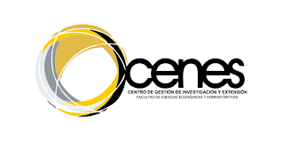

Proyectos privados y proyectos públicos, con enfoque aplicado.
Facultad de Ciencias Económicas y Administrativas · CENES
Diplomado en Formulación, Evaluación y Gestión de Proyectos
Formación aplicada para estructurar, evaluar y gestionar proyectos de inversión en contextos privados y públicos, integrando criterios técnicos, financieros, socioeconómicos y herramientas como marco lógico y MGA Web.
120 horas
Modalidad virtual
Certificado de asistencia y aprobación

Información general
- Valor: $1.850.000
- Duración: 120 horas (80 h sincrónicas + 40 h trabajo aplicado)
- Sede: Tunja
- Fechas: Por definir
- Horario: Por definir
Incluye módulos A1-A6, B1-B5, bloques introductorios y proyecto integrador.
Énfasis en formulación pública, validaciones y soportes en MGA Web.
Sobre el diplomado
Una formación para tomar decisiones de inversión con fundamento técnico
El diplomado fortalece competencias para formular, evaluar y gestionar proyectos de inversión en contextos privados y públicos, articulando metodologías de identificación y estructuración, evaluación financiera y socioeconómica, gestión del riesgo y herramientas prácticas orientadas a la viabilidad técnica.
Dirigido a
Servidores públicos, equipos de planeación, formuladores de proyectos, contratistas, consultores, organizaciones sociales, empresarios y profesionales que estructuren proyectos para inversión privada o financiación pública.
Beneficios de formación
Qué podrá desarrollar quien curse este diplomado
Estructuración de proyectos privados
Desarrolle estudios de mercado, técnico y financiero para sustentar decisiones de inversión.
Evaluación financiera
Construya flujos de caja y analice indicadores como VPN, TIR, PRI, CAUE y riesgos asociados.
Formulación pública
Aplique marco lógico, cadena de valor, indicadores, supuestos y análisis de alternativas.
Evaluación socioeconómica
Use criterios de costo-beneficio, costo-efectividad e incorpore impactos, beneficiarios y sostenibilidad.
MGA Web
Registre proyectos, gestione validaciones frecuentes y prepare soportes para revisión técnica.
Seguimiento y control
Diseñe planes de gestión con indicadores, hitos, seguimiento físico-financiero y control de cambios.
Plan de estudio
Módulos con despliegue interactivo
Haz clic en cada módulo para ver sus contenidos.
Bloque AProyectos privados: fundamentos y estructuración
6 h
Proyectos privados: fundamentos y estructuración
- Ciclo del proyecto, prefactibilidad y factibilidad.
- Tipologías de inversión privada y criterios de decisión.
- Estructura de estudios y productos de formulación.
A1Identificación y diseño de la oportunidad
6 h
Identificación y diseño de la oportunidad
- Problema u oportunidad y propuesta de valor del proyecto.
- Alcance, supuestos, restricciones y stakeholders.
- Estructura del caso y línea base.
A2Estudio de mercado
12 h
Estudio de mercado
- Demanda, oferta, segmentación y competencia.
- Proyección de ventas o usuarios y estrategia comercial.
- Estimación de ingresos y variables clave.
A3Estudio técnico y operativo
10 h
Estudio técnico y operativo
- Tamaño, localización y proceso o tecnología.
- Capacidad, costos de inversión y operación.
- Requerimientos de recursos, calidad y logística.
A4Estudio organizacional, legal y ambiental
6 h
Estudio organizacional, legal y ambiental
- Estructura organizacional y gobierno del proyecto.
- Aspectos legales, regulatorios y contractuales.
- Gestión ambiental y permisos.
A5Evaluación financiera de proyectos privados
14 h
Evaluación financiera de proyectos privados
- Flujo de caja: inversión, OPEX, CAPEX y capital de trabajo.
- Indicadores: VPN, TIR, PRI, CAUE y tasa de descuento.
- Sensibilidad, escenarios y punto de equilibrio.
- Riesgo y decisión de inversión.
A6Gestión del proyecto privado
6 h
Gestión del proyecto privado
- Planificación: EDT/WBS, cronograma y presupuesto.
- Riesgos, adquisiciones y control de cambios.
- Seguimiento mediante KPIs y reporte ejecutivo.
Bloque BProyectos públicos: marco institucional y planificación
8 h
Proyectos públicos: marco institucional y planificación
- Marco de inversión pública y planeación territorial.
- Fuentes de financiación: presupuesto, SGR/regalías y cooperación.
- Tipologías, elegibilidad y enfoque de resultados.
B1Diagnóstico, problema y alternativas (marco lógico)
12 h
Diagnóstico, problema y alternativas (marco lógico)
- Diagnóstico, línea base y población objetivo.
- Árbol de problemas y árbol de objetivos.
- Análisis de alternativas y selección.
- Participantes, actores y supuestos.
B2Formulación: productos, cadena de valor e indicadores
12 h
Formulación: productos, cadena de valor e indicadores
- Cadena de valor y productos.
- Indicadores de producto, resultado e impacto, y metas.
- Riesgos, mitigación y sostenibilidad.
- Costos, cronograma y coherencia interna.
B3Evaluación socioeconómica de proyectos públicos
16 h
Evaluación socioeconómica de proyectos públicos
- Principios de evaluación social frente a evaluación financiera.
- Costo-beneficio: identificación y valoración de beneficios y costos.
- Costo-efectividad y criterios para elegir enfoque.
- Precios sombra y tasa social de descuento.
- Análisis de sensibilidad socioeconómica y distribución de impactos.
- Evaluación ex ante, monitoreo y evaluación ex post.
B4Taller MGA Web: registro, validaciones y soportes
8 h
Taller MGA Web: registro, validaciones y soportes
- Estructura del aplicativo MGA Web y sus módulos.
- Registro paso a paso con caso guía.
- Validaciones, consistencia y errores frecuentes.
- Soportes y preparación para revisión técnica.
B5Gestión, seguimiento y control en proyectos públicos
4 h
Gestión, seguimiento y control en proyectos públicos
- Seguimiento físico-financiero e informes.
- Gestión de riesgos, control de cambios y cierre.
- Lecciones aprendidas y evaluación ex post.
FinalProyecto integrador y sustentación ejecutiva
10 h
Proyecto integrador y sustentación ejecutiva
- Estructuración completa de un proyecto privado o público con checklist.
- Entrega de documento y anexos.
- Sustentación ejecutiva y retroalimentación final.
Modalidad
Virtual
Diseñado para formación aplicada con énfasis en análisis, formulación y herramientas de gestión.
Estado de convocatoria
Próximamente
Fechas de inscripción, inicio y terminación por definir.
Certificación
Aprobación y asistencia
Se otorga certificado de asistencia y aprobación al finalizar el diplomado.
Contacto institucional
Solicita información del diplomado
Para conocer próximos pasos, proceso de inscripción y apertura de cohorte, comunícate con CENES - UPTC.
cenes@uptc.edu.co
PBX 7405626 Extensión 2428-2506
Tunja · Universidad Pedagógica y Tecnológica de Colombia
Información y apertura de cohorte

- Próximamente se publicará el enlace de inscripción.
- Fechas y horarios se confirmarán en la apertura oficial.
- Atención institucional a través del correo y PBX del CENES.